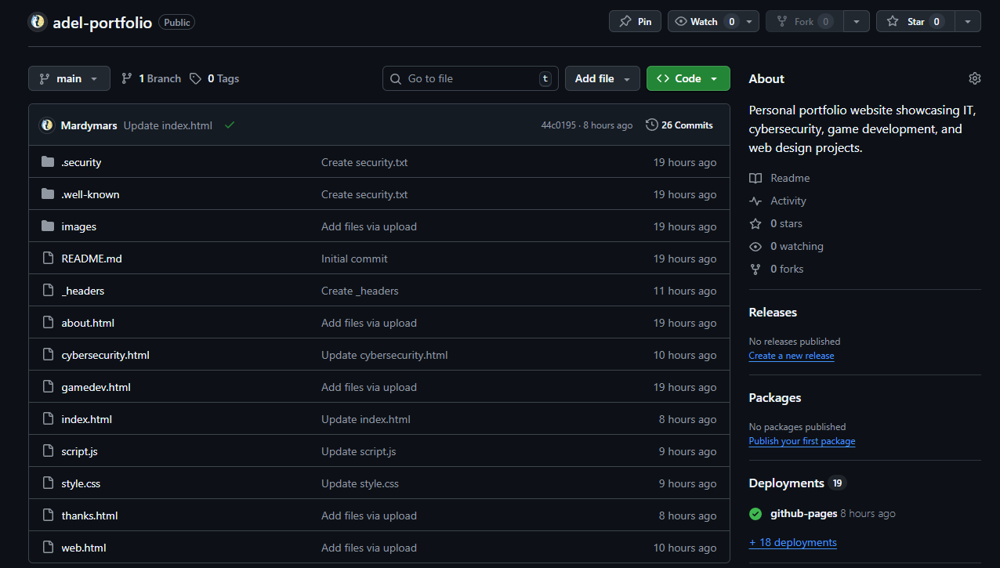

This portfolio is a live front-end project built with semantic HTML, CSS, and vanilla JavaScript.
It emphasizes maintainable structure, accessibility-aware UI decisions, and a real deployment workflow.
Core Capabilities
Multi-page site structure with shared styling and scripts
Responsive layout design for desktop and mobile
Accessible UI patterns including focus states, readable contrast, and text resizing
Vanilla JavaScript interactions involving state, events, and DOM updates
Clean organization of assets and reusable components
Artifacts
Short, focused proof of workflow and implementation quality.
Artifact 1: Workflow and Deployment (GitHub + Netlify)
Repository structure and deployment history showing version control, iterative updates, and continuous delivery.

GitHub repository and deployment workflow evidence.
Commit history and controlled changes
Automated deploy pipeline
Organized HTML, CSS, JS, and asset structure
Artifact 2: Interactive and Accessibility UI (GIF Demo)
Demonstration of UI state and interactions implemented without frameworks, including theme, text sizing, and carousel controls.